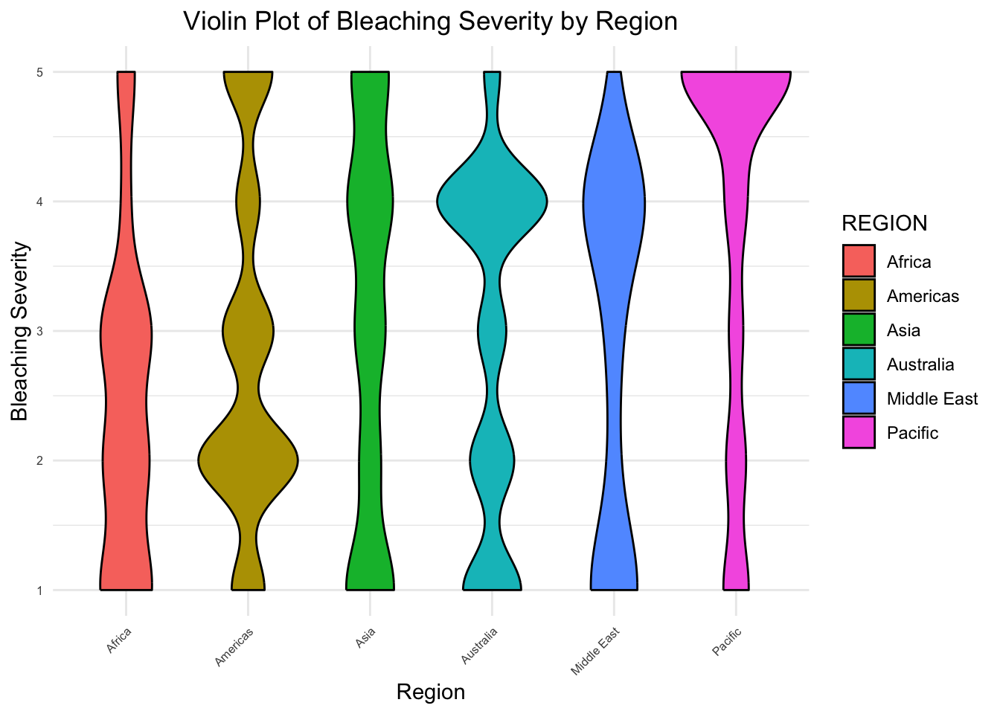
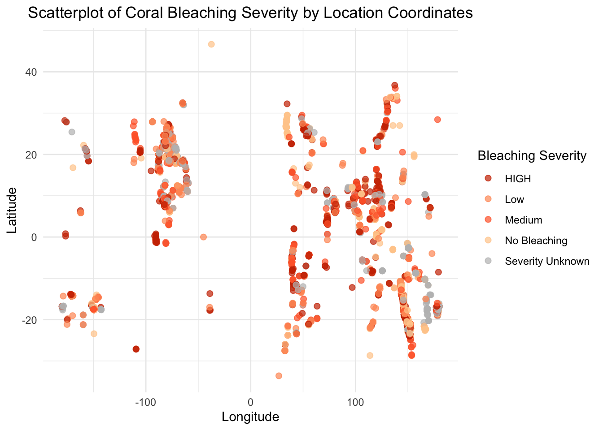
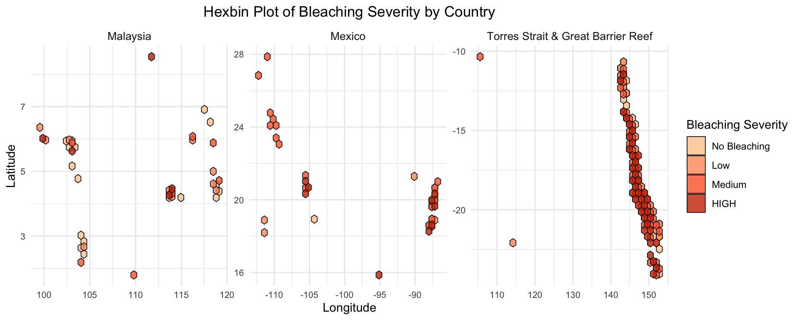

ggplot(data = df, aes(x =fct_infreq(REGION))) +geom_bar(fill ="lightblue", color ='black') +labs(y ="Number of Observations", x ="Region", title ="Number of Observations by Region") +theme_minimal() +theme(plot.title =element_text(hjust =0.5),axis.text =element_text(size =6) )
This bar chart demonstrates the total number of coral bleaching observations, all of various bleaching degrees, across six regions. Australia and the Americas have the highest number of observations, both over 2000, due to the presence of extensive coral reef systems (e.g., the Great Barrier Reef) and stronger monitoring efforts. The Pacific and Asia follow with moderate observation counts, reflecting their significant reef areas but potentially less monitoring capacity compared to Australia and the Americas. Africa and the Middle East have the fewest observations, possibly due to smaller reef systems and limited monitoring resources.
Code
country_counts <- df |>filter(BLEACHING_SEVERITY !="Severity Unknown") |>group_by(COUNTRY) |>summarize(num_observations =n()) |>arrange(desc(num_observations))# Cleveland dot plotggplot(country_counts, aes(x = num_observations, y =reorder(COUNTRY, num_observations))) +geom_point(color ="lightblue", size =1.5) +geom_segment(aes(xend =0, yend = COUNTRY), color ="darkgray", size =0.5) +labs(title ="Number of Observations by Country",x ="Number of Observations",y ="Country" ) +theme_minimal() +theme(plot.title =element_text(hjust =0.5),axis.text =element_text(size =6) )
Warning: Using `size` aesthetic for lines was deprecated in ggplot2 3.4.0.
ℹ Please use `linewidth` instead.
This Cleveland dot plot displays the total number of observations for each country. Australia, particularly the Torres Strait & Great Barrier Reef region, dominates the data with the highest number of observations, reflecting its extensive reef system and well-funded research initiatives. Other countries, such as Mexico, Malaysia, and the United States (specifically Florida), also show high observation counts, likely due to their substantial reef coverage and strong conservation efforts. In contrast, many countries have significantly fewer observations, possibly indicating limited monitoring resources or smaller reef areas. The steep drop-off in observation counts after the top few countries highlights a variable global distribution of monitoring efforts.
Code
df$BLEACHING_SEVERITY <-factor(df$BLEACHING_SEVERITY)# Violin plotggplot(df, aes(x = REGION, y =as.numeric(BLEACHING_SEVERITY), fill = REGION)) +geom_violin(trim =TRUE, color ="black") +labs(x ="Region", y="Bleaching Severity", title ="Violin Plot of Bleaching Severity by Region") +theme_minimal() +theme(axis.text.x =element_text(angle =45, hjust =1)) +theme(plot.title =element_text(hjust =0.5),axis.text =element_text(size =6) )

This violin plot demonstrates the distribution of bleaching severity across different regions, with the width of the violins representing the density of observations for each severity level. Bleaching severity ranges from lower values to higher values, providing insights into the most commonly observed severity levels within each region:
Americas & Australia: These regions exhibit a wide range of bleaching severity and diversity across every level. The Americas has more emphasis on lower levels (level 2) while Australia has higher severity levels (level 4).
Africa & Middle East: Africa shows a concentration of observations at lower severity levels, suggesting less frequent high-severity bleaching. Contrastly, the Middle East has a similar shape, but reversed—emphasizing higher severity levels.
Asia & Pacific: These regions appear to have more uniform severity levels; however, the Pacific differs in that it demonstrates a significant increase in density at severity level 5, the highest of any region.
This visualization highlights the variation in bleaching severity across regions, and suggests that regions like Australia, the Americas, and the Pacific experience a broader spectrum of bleaching severity. This variability potentially reflects the presence of larger and more closely monitored reef systems. In contrast, regions like Africa and the Middle East may require additional monitoring to better understand coral health dynamics.
3.3 Temporal Trends
Code
# Aggregate the data to count the number of bleaching events per yeardf_yearly <- df |>group_by(YEAR) |>summarize(num_bleaching_events =n(), .groups ="drop")ggplot(df_yearly, aes(x = YEAR, y = num_bleaching_events)) +geom_line(color ="steelblue", size =1) +geom_point(color ="black", size =1, alpha =0.2) +labs(x ="Year",y ="Number of Observations",title ="Yearly Trend of Coral Bleaching Events" ) +theme_minimal() +theme(plot.title =element_text(hjust =0.5),axis.text.x =element_text(angle =45, hjust =1) )
The line plot illustrates how the number of observations changes over time from the 1970s to the early 2010s. The number of observations remained consistently low from the 1970s through the 1980s, with a notable spike occurring just before the year 2000. This spike may reflect a combination of intensified monitoring efforts, global warming impacts, or a particularly severe bleaching event. After this peak, the number of recorded events fluctuates, but remains higher than pre-2000 levels.
It is important to note that the consistently low observation counts before the 1990s may indicate limited monitoring rather than an absence of bleaching events. Overall, this graph aligns with known increases in global coral stress due to rising sea surface temperatures.
Code
#Missing Years with Interpolated Dataseverity_mapping <-c("No Bleaching"=0, "Low"=1, "Medium"=2, "HIGH"=3, "Severity Unknown"=NA)df$BLEACHING_SEVERITY_NUM <- severity_mapping[df$BLEACHING_SEVERITY]# Aggregate data to calculate the average bleaching severity per yeardf_yearly <- df |>group_by(YEAR) |>summarize(avg_bleaching_severity =mean(BLEACHING_SEVERITY_NUM, na.rm =TRUE), .groups ="drop")# Add missing years and interpolate BLEACHING_SEVERITYdf_yearly_filled <- df_yearly |>complete(YEAR =seq(min(YEAR), max(YEAR), by =1)) |># Add missing yearsmutate(avg_bleaching_severity = zoo::na.approx(avg_bleaching_severity, na.rm =FALSE)) # Interpolate missing values# Create the line chartggplot(df_yearly_filled, aes(x = YEAR, y = avg_bleaching_severity)) +geom_line(size =1, color ="steelblue") +geom_point(size =1, color ="black", alpha =0.2) +labs(x ="Year",y ="Average Bleaching Severity",title ="Trend of Average Bleaching Severity Over Time" ) +theme_minimal() +theme(plot.title =element_text(hjust =0.5),axis.text.x =element_text(angle =45, hjust =1) )
Warning: Removed 10 rows containing missing values or values outside the scale range
(`geom_line()`).
Warning: Removed 10 rows containing missing values or values outside the scale range
(`geom_point()`).
This line chart demonstrates the overall trend of average coral bleaching severity over time. Due to more limited data points in earlier decades, we interpolated a few missing years (primarily between 1970-1980) in order to achieve a continuous perspective. The severity ranges from 0 to 3, with higher values indicating more severe bleaching.
There is a notable rise in average bleaching severity beginning in the 1990s, aligning with trends in warming temperatures and increased coral stress. What is most alarming is the steep, upward trajectory post-2000, with the highest average severity occurring in the early 2010s. This indicates a concerning trend of increasingly severe bleaching events in more recent years.
Code
# Aggregate the data to count the number of observations per year and regiondf_summary <- df |>group_by(YEAR, REGION) |>summarize(num_observations =n(), .groups ="drop")ggplot(df_summary, aes(x = YEAR, y = num_observations, color = REGION, group = REGION)) +geom_line(size =1, alpha =0.7) +geom_point(size =1, alpha =0.5) +labs(x ="Year",y ="Number of Observations",color ="Region",title ="Number of Observations Over Time by Region" ) +theme_minimal() +theme(plot.title =element_text(hjust =0.5),legend.position ="right",legend.key.size =unit(0.7, "cm") )
In this line chart, we observe the total number of observations over time grouped by region. The data highlights a sharp spike in observations in Australia around the year 2000, supporting our previous observations and insights. The Americas also display notable peaks, though less pronounced than Australia, followed by Asia. This visualization emphasizes the geographic and temporal disparities in monitoring efforts, with significant gaps in data for some regions, such as Africa and the Middle East.
Code
# Convert BLEACHING_SEVERITY to numeric if necessaryseverity_mapping <-c("No Bleaching"=0, "Low"=1, "Medium"=2, "HIGH"=3, "Severity Unknown"=NA)df$BLEACHING_SEVERITY_NUM <- severity_mapping[df$BLEACHING_SEVERITY]# Aggregate data to calculate the average bleaching severity per monthdf_monthly <- df |>group_by(MONTH) |>summarize(avg_bleaching_severity =mean(BLEACHING_SEVERITY_NUM, na.rm =TRUE), .groups ="drop")ggplot(df_monthly, aes(x =factor(MONTH, levels =1:12), y = avg_bleaching_severity)) +geom_bar(stat ="identity", fill ="lightblue", color="black", alpha =0.8) +labs(x ="Month",y ="Average Bleaching Severity",title ="Average Bleaching Severity by Month" ) +scale_x_discrete(labels =c("1"="Jan", "2"="Feb", "3"="Mar", "4"="Apr","5"="May", "6"="Jun", "7"="Jul", "8"="Aug","9"="Sep", "10"="Oct", "11"="Nov", "12"="Dec" )) +theme_minimal() +theme(plot.title =element_text(hjust =0.5),axis.text.x =element_text(angle =45, hjust =1) )
This bar chart explores seasonal patterns in coral bleaching events by illustrating the average bleaching severity for each month. Bleaching severity is slightly higher during the early months of the year, particularly February-April, compared to other months. July also exhibits a notable severity level comparable to that of March. Severity levels rise again in November, indicating a possible seasonal rebound.
This visualization suggests a seasonal component to coral bleaching, potentially driven by variations in ocean temperatures and environmental stressors. We would expect higher levels of bleaching to occur in the summer months; however, many regions exhibit typical “summer”/warmer water temperatures at different months of the year. This could explain why February experienced a high spike, as many regions (i.e. regions near the Caribbean and the Great Barrier Reef) experience warm oceanic temperatures in the winter months.
3.4 Geospatial Trends
Code
# Removing an outlier by filtering LAT and LON within a reasonable range# Replace the range with appropriate limits after inspecting the datadf_filtered <- df |>filter(LAT >-90& LAT <90, LON >-180& LON <180) # Latitude and longitude should be within these bounds# Ensure BLEACHING_SEVERITY is a factordf_filtered$BLEACHING_SEVERITY <-factor(df_filtered$BLEACHING_SEVERITY)# Create the scatterplot without the outlierggplot(df_filtered, aes(x = LON, y = LAT, color = BLEACHING_SEVERITY)) +geom_point(size =2, alpha =0.7) +scale_color_manual(values =c("No Bleaching"="#FFCC99", "Low"="#FF9966", "Medium"="#FF6633", "HIGH"="#CC3300", "Severity Unknown"="gray")) +labs(x ="Longitude",y ="Latitude",color ="Bleaching Severity",title ="Scatterplot of Coral Bleaching Severity by Location Coordinates" ) +theme_minimal() +theme(plot.title =element_text(hjust =0.5),legend.position ="right" )

This scatterplot visualizes coral bleaching severity by geographic coordinates, with point colors indicating bleaching severity levels of each recorded observation. Dense clusters of observations are evident in specific regions, likely corresponding to areas with extensive coral reef systems and high monitoring efforts.
We observe that the majority of high bleaching severity cases lie in the eastern hemisphere. Lighter and medium shaded points dominate the plot, suggesting that most observations are of lower to moderate severity. Furthermore, as shown by the lightest shade, there are areas where no bleaching was observed. This indicates that some regions remain unaffected despite nearby bleaching events. This further highlights that various spectrums of bleaching can coexist within the same location, or even on the same coral, in each region.
Code
# Get the top 3 countries based on number of observationstop_3_countries <- df |>filter(BLEACHING_SEVERITY !="Severity Unknown") |>group_by(COUNTRY) |>summarize(num_observations =n()) |>arrange(desc(num_observations)) |>slice_head(n =3)# Filter data for the top 3 countriestop_3_countries_df <- df |>filter(COUNTRY %in% top_3_countries$COUNTRY & BLEACHING_SEVERITY !="Severity Unknown")# Hexbin plotggplot(top_3_countries_df, aes(x = LON, y = LAT, fill =factor(BLEACHING_SEVERITY, levels =c("No Bleaching", "Low", "Medium", "HIGH")))) +geom_hex(alpha =0.8, color ='black', size = .3) +facet_wrap(~COUNTRY, scales ="free") +labs(title ="Hexbin Plot of Bleaching Severity by Country",x ="Longitude",y ="Latitude",fill ="Bleaching Severity" ) +theme_minimal() +scale_fill_manual(values =c("No Bleaching"="#FFCC99","Low"="#FF9966","Medium"="#FF6633","HIGH"="#CC3300" )) +theme(strip.text =element_text(size =10), axis.text =element_text(size =8),plot.title =element_text(hjust =0.5) )

This hexbin plot portrays the spatial distribution of coral bleaching severity for the three countries with the highest number of observations: Malaysia, Mexico, and the Torres Strait & Great Barrier Reef region in Australia. Each hexagon represents the density level of observations within the region, with colors indicating bleaching severity levels from “No Bleaching” to “HIGH”.
Malaysia has fewer total observations, distributed across all cardinal directions within the country. Most events show “No Bleaching”/“Low” to “Medium” levels of bleaching. Mexico has a moderate density of observations, primarily clustered along specific latitudes and longitudes. The reported values primarily consist of “Medium” in addition to “HIGH” severity events.
Australia (Torres Strait & Great Barrier Reef) demonstrates the highest concentration of observations. While the range of bleaching severity levels are diverse, it is dominated by “HIGH” severity events.
Code
top_country <- df |>filter(BLEACHING_SEVERITY !="Severity Unknown") |>filter(LON >142) |>group_by(COUNTRY) |>summarize(num_observations =n()) |>arrange(desc(num_observations)) |>slice_head(n =1)# Filter data for the top 5 countriestop_country_df <- df |>filter(COUNTRY %in% top_country$COUNTRY & BLEACHING_SEVERITY !="Severity Unknown") |>mutate(LAT =round(LAT, 1), # Round LAT to the nearest tenthLON =round(LON, 1), # Round LON to the nearest tenthBLEACHING_SEVERITY =factor(BLEACHING_SEVERITY, levels =c("No Bleaching", "Low", "Medium", "HIGH")) )world_map <-map_data("world")# Heatmap plotggplot() +geom_map(data = world_map, map = world_map, aes(x = long, y = lat, map_id = region), color ="black", fill ="lightgray", size =0.2) +geom_tile(data = top_country_df, aes(x = LON, y = LAT, fill = BLEACHING_SEVERITY)) +facet_wrap(~COUNTRY, scales ="free") +labs(title ="Heatmap Plot of Bleaching Severity",x ="Longitude",y ="Latitude",fill ="Bleaching Severity" ) +theme_minimal() +scale_fill_manual(values =c("No Bleaching"="#FFCC99","Low"="#FF9966","Medium"="#FF6633","HIGH"="#CC3300")) +theme(strip.text =element_text(size =10), axis.text =element_text(size =8), plot.title =element_text(hjust =0.5) ) +xlim(142, 153) +ylim(-25, -8)
Warning in geom_map(data = world_map, map = world_map, aes(x = long, y = lat, :
Ignoring unknown aesthetics: x and y
Warning: Removed 2 rows containing missing values or values outside the scale range
(`geom_tile()`).
This heatmap exhibits the spatial distribution of coral bleaching severity across the Torres Strait and Great Barrier Reef. The intensity of the colors indicates the presence of many high bleaching severity events.
Northern and central areas show a mix of “No Bleaching” and “Low” severity, suggesting less frequent or less severe bleaching events in these regions. Areas of “HIGH” bleaching severity are primarily located in the southern parts of the reef, highlighting regions under greater stress.
The visualization supports the urgent need for targeted interventions in areas with high bleaching severity and continued monitoring across the reef system to track ongoing changes. This map provides a clear spatial overview of bleaching impacts and highlights priority areas for conservation efforts.
3.5 Summary
Our analysis reveals several key insights about coral bleaching trends and their global impact. First, regions like Australia and the Americas dominate the number of observations, reflecting strong monitoring capacity, while Africa and the Middle East demonstrate significantly smaller numbers of observations, likely due to limited resources. Spatial distribution maps highlight the Great Barrier Reef as a hotspot for high-severity bleaching events, emphasizing the urgent need for conservation in the region. Temporal trends show a concerning increase in bleaching severity since the 1990s, closely tied to global warming and rising ocean temperatures. Seasonal patterns suggest a connection between bleaching events and warmer months, but variations across regions reflect differences in local climates.